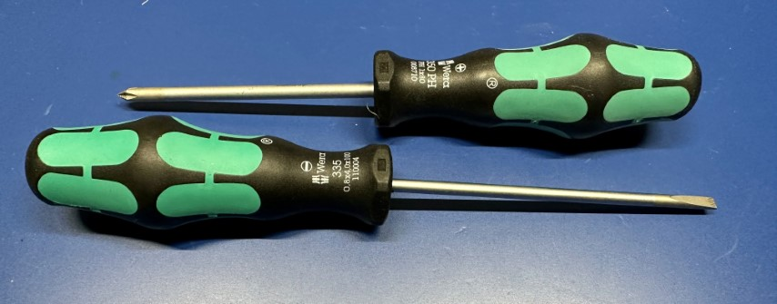
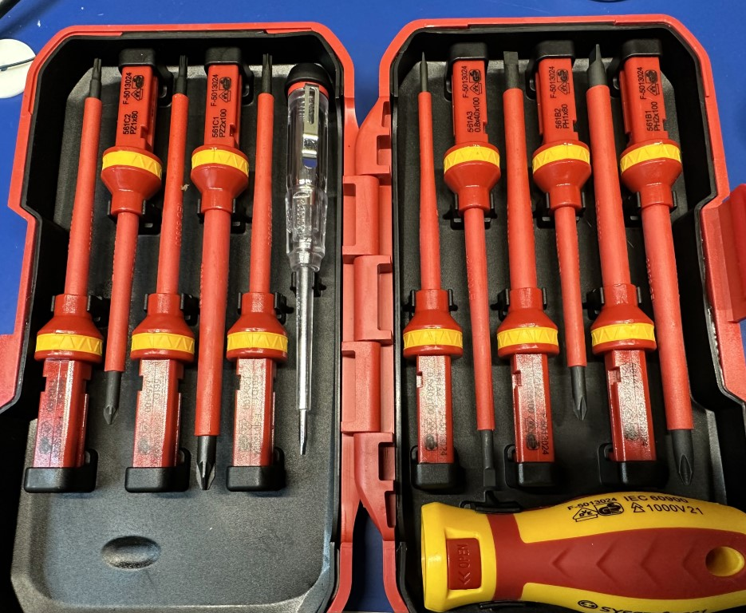
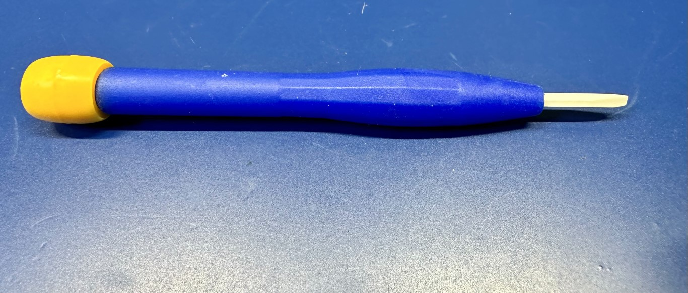
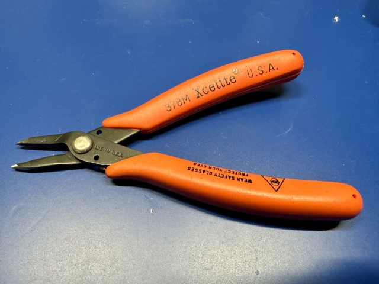
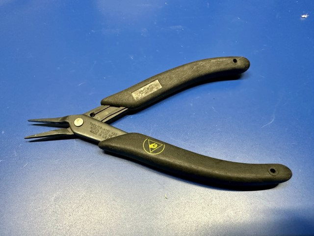
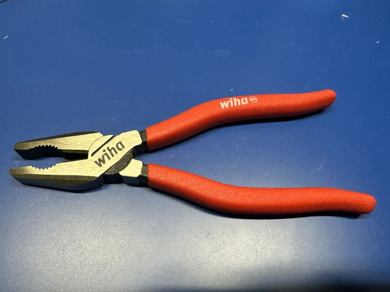
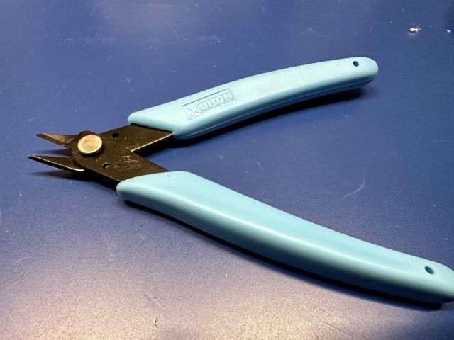
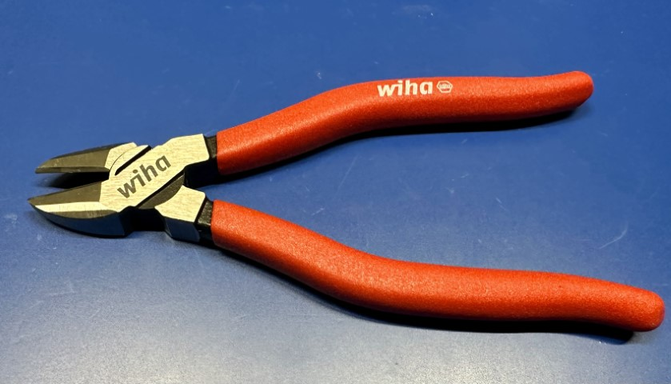
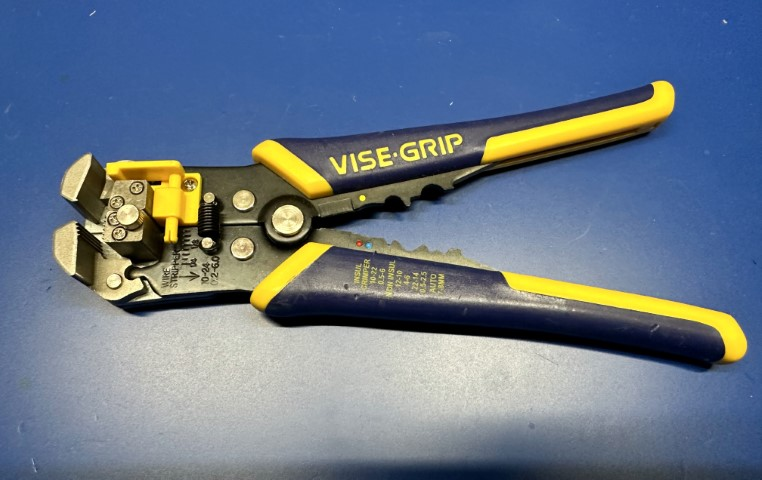
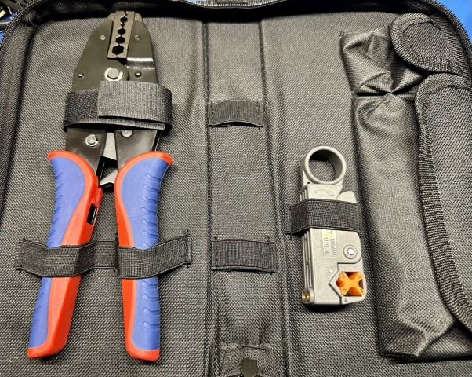

Hand Tools
General Guidance
My general guidance is that you should buy an inexpensive/cheap tool to start, and upgrade once you've figured out 1) whether you would use it enough; 2) what you value in the tool. Yes, there is often huge differences between cheap and expensive tools, but it may not matter for your purposes. I call this the Harbor Freight Rule. You don't buy a $700 Snap On bearing puller to do it once.
What I've included in here are the tools that I personally like. Some are super cheap, and some aren't.
Soldering
Soldering Iron/Station
My soldering iron of choice is a (10 year old?) Hakko FX-888 (analog). A while back they converted to the FX-888D digital version, and I'm sure it's equally good. Hakko is one of the big makers of soldering equipment, and their equipment is very well regarded. I like the FX-888 because it's small, and heats up quickly.
I have a few recommendations, though, if you're considering buying a soldering iron/station:
- You absolutely, positively must have accurate temperature control. Super cheap irons just don't have that control which can lead to poor soldering, terrible user experience, and potentially damaged components.
- Stick to one of the well known manufacturers. There's a lot of random-string-of-letters named companies on Amazon peddling knock offs, and some are probably fine, and a lot are not. When I say "well known", I'd list Hakko, Weller, JBC, Metcal, or Edsyn. Not only are they better made, but they (and the entire ecosystem) will be supported for decades. I can easily buy T18 tips for my Hakko from dozens of places.
- Soldering stations (meant to be in a single location) tend to be better bang for buck than a soldering pen (like the well regarded TS-80P). All that additional complexity cost money. Unless you need to be able to throw it in your backpack, it's not really the best trade off.
- Don't overspend. Yes, get a decent brand, but you don't need a $3,000 JBC workstation.
Note
You might not need a soldering iron. There are a lot of ecosystems, like STEMMA QT, which don't require soldering to connect things together.
Desoldering Tool and Solder Wick
It doesn't matter how good you get, you'll always make mistakes. It just happens. Being able to clean up and correct them is critical, and there's two things you can use to remove solder:
- "Solder suckers". These are spring-loaded little tubes that will suck the solder off the PCB or wire. They have big brothers that use vacuum pumps to do the same thing, but those are very expensive.
- Solder wick. This is basically super-fine copper braided together and then with a coating of flux and other materials to help remove solder.
Which one should you get? I would get one of each. Solder wick is cheap, but it's single use and a consumable. For a solder sucker, I absolutely swear by the original Edsyn Soldapullt (I actually have the Silverstat model I got on clearance from TEquipment).
For solder wick, like solder and flux, I would recommend sticking with one of the big names: Multicore, MG Chemicals, or Chip Quik. My luck with cheap little ones I've gotten off AliExpress and elsewhere is... disappointing.
Warning
Be careful when using solder wick. You are holding copper braid, and copper loves nothing so much as to transfer heat ... quickly.
Screwdrivers
You're going to need screwdrivers, either to put things together, or pull them apart. They're also insanely useful for a bunch of things where it might not be their design intent. They come in a few categories that I'll cover: normal, micro, and insulated. This advice is for makers, and not mechanics. I wouldn't necessarily always make the same choices of tools to work on a car or furnace as I would for smaller things.
So Many Choice
There are, quite literally, hundreds of types of screw heads out in the world. You can see a list of some of the most popular here.
Normal
 This is your run-of-the-mill everyday screwdriver. It's not unreasonable to just buy a random set that has a selection of both Phillips and the accursed slotted screwdrivers. These are a pair from the nicest ones I own.
{kind=link}
They're Wera Kraftform, and they're my favorite because they're insanely comfortable, strong, and still quite light. I bought them as part of a kit that came with a nice little rack to hold them. There's tons of good brands you can buy besides Wera. A few are: Craftsman (yes, the old Sears brand), Cobolt, Klein, Wiha, Gearwrench, Knipex, Bosch, Swiss, and Tekton. You can find a couple of interesting reviews on Youtube.
Personally, I don't like the multi-tip screwdrivers for my main screwdrivers. That's different for the micro side of the screwdriver world. Find 2-3 of each type (Phillips and slotted), and that'll be fine for a long time.
Micro
{kind=link}
Electronics are full of tiny little screws and bolts. To deal with them, you have a couple options. You can pick up a set of dozens and dozens of tiny screwdrivers (Wera makes a lovely one, but pricey).
The other option is to pick up one of many "kits" that have a ton of bits and a holder or two. It might have other things with it as well. I'd say iFixit has the best value for that. This is the one I've had for 15 years from Wiha.
For most people, the multi-bit set is the way to go.
Insulated
 Insulated screwdrivers come in two forms: ones for high-voltage, and ones for fine adjustment of electronic components. The first, for high-voltage, are typically rated to 1,000V, and are heavily insulated for both the handle and the shaft to protect against shock from accidental contact with live circuits. They come in single items, but also in interchangeable sets. Sets seem to always use square mechanisms to join. I picked up a relatively cheap set on AliExpress a while back.
 Ceramic-tipped screwdrivers for adjusting sensitive electronic components such as capacitors and resistors. They are completely non-conductive and non-magnetic so there's zero risk of short-circuiting, creating magnetic interference, or capacitively coupling with something. They also won't mar or scratch components, but they're quite brittle so don't use them for tightening screws. This is a super cheap one I picked up from Amazon (just search ceramic screwdriver):
{kind=link}
Pliers
Pliers grab things. The pliers you need depends on the work you're doing, but I would recommend at least one needle nose and one long nose.
Needle Nose
 I use needle nose pliers constantly. They're by far the workhorse of this category. Their small tip makes it possible to get into a lot of spaces where might not be able to, or even just to stick in a 3d print and pull out some stubborn support material. I actually have two different needle nose pliers for work. First is a Xcelite (now Weller) 378M shown here.
{kind=link}
 And the other is a Xuron 450AS, which are amusingly called "TweezerNose", and has a very fine point. If this doesn't fit into the space, you probably shouldn't be going there. One thing that's different about these is that they are ESD-safe (meaning they have surface resistivity on the handle grips). You can tell that both from the black handles (most ESD-safe things are black) and the small logo on the handle grip.
{kind=link}
You don't need to worry about buying the ESD-safe tools right now. Yes, they are "safer" for handling semiconductor components (passives, like resistors, are much more tolerant), but they are substantially more expensive, and more of a concern in production environments. If I recall, I got these because they were on sale.
Long Nose
{kind=link}
Long nose pliers are the bigger cousin of the needle nose (or vice versa). They're designed to grip, bend, and twist wire and other small workpieces. They have long, tapered jaws and a wire cutter. The ones shown here are ones that came in the set. I discuss.
Combination

Like their name suggests, these are for a combination of uses. They're great for general gripping of things, and typically have a curved area for round material. They also have a passable cutter. Just an all-around tools. Mine came as part of a set.
When you really need to grab hold and pull on something, these are the best tools (ignoring things like channel locks).
Split Ring Pliers
{kind=link}
Sometimes you find yourself needing to open, repeatedly, one of those split-rings, and while you could, like I used to, use your fingernail, or a butter knife, or whatever else random thing you have laying around, like another key on your key ring, to open them, there's actually a tool designed specifically for this. I didn't even know this for 40 years of my life! My poor fingernails.
{kind=link}
Behold, the savior of your fingernails! The Xuron 496 split ring pliers. These little pliers with a beak fit perfectly into the split ring and open it so that you can easily get things on or off of it. It seems so silly to have a dedicated pair of pliers for this, but ... your fingernails, or butter knife, will thank you. If you're curious how to use them, you can watch this little two minute video.
This is just one of those things that I love finding a relatively inexpensive tool that makes my life so much easier. Obviously, if you never deal with split rings, then there's no reason to buy one. I mean, other than you would then own a set of pliers that looked like a birds beak.
Lead Forming Tool
{kind=link}
These fall into a category that, quite honestly, you don't need until you do need them, so you can generally just skip them. I cover them here because 1) they're neat; 2) it's good to know they exist. Lead forming pliers is designed to create spacing/stand-off crimps in a wire or component lead. The ones I have are the Xuron 573L, which look like the one's on the right.
What makes them special is the head on them.
{kind=link}
As you'll see, there's actually a bunch of moving pieces. When you put a wire in them, and close them, you get something like this:
{kind=link}
So what good is this, you might ask? It's good for creating stand-offs between a component and a board, for example. Or ensuring a wire can't go through a hole easily. As I said, you don't need them until you need them. When you do this, for example, to a axial electrolytic capacitor, you can get something like this:
{kind=link}
Cutters
Sometimes you need to make one thing become two things, and that's where cutters come in. If you can have only one pair, get side flush cutters (shears).
Side Flush Cutters (Shears)
 You absolutely must own these. No exceptions. They will become your favorite cutters, and they will be with you forever. What's a side flush cutter? It's a small cutter which is designed to cut flush against a surface. Think trimming leads after soldering. But you can use it for just about any cutting needs, even hogging out material from a 3D print. It's not a bad idea to have a couple sets. This the main ones I use, Xuron 170-II are super sharp.
{kind=link}
You can see how flat and sharp the blade is, even after several years of use:
{kind=link}
I would pick up at least 2 of them. The big thing you can't do with them is cut any really thick or hardened wire. For that, you'll need diagonal cutters.
Diagonal Cutters
 These are a super all-around cutter for just about any material. They tend to be hardened by the manufacturer, and can cut a lot of different materials. They also have a longer handle, which gives you more leverage when cutting things. I picked up mine, along with some pliers) as part of a set from Wiha.
{kind=link}
You can get something cheaper, and my recommendation would be to drop by your local hardware store for these and just see what feels good in your hand and to your wallet.
Tweezers
When working with electronics, we work with a lot of small things. Small things need tweezers, and these are mine:
{kind=link}
From the top, you have some with bent tips for placing things like SMD parts. The needle sharp middle pair are great from pulling things out of connectors, etc. And finally, the bottom set have a ceramic tip, which means they are 100% non magnetic, and non-reactive. Try picking up a small magnet with normal ones.
I don't recall where I got them, quite honestly, but to start, you can just pick up a small set of ESD-safe (probably!) tweezers from your favorite retailer. Note the type on the handle (ESD-15 and ESD-16). These are somewhat standardized industry shapes, so you can search for those if you want something similar.
Wire Strippers
You're going to use a lot of wire. But (most of) that wire comes with a nice insulator around it, and you want to keep most of it. That's where wire strippers come in.
General Wire Strippers
{kind=link}
The most useful and versatile form of wire stripper is just a general purpose model. I like the kind with curved handles (a few companies make them) because it's more comfortable. I generally would look for something that handles AWG 20-32 wire, as that's what you'll use the most. Much bigger wire is actually pretty easy to strip with just a pair of cutters.
Sometimes these general purpose cutters come with crimper capabilities, and they're probably fine for standard electrical connectors (like a spade lug), but they'll struggle with anything finer or "weirder".
 If you find yourself stripping a lot of wire, or need to make sure that it's all stripped to a pretty exact length, you can step up to one of the self-adjusting models, which has a little pin and plate that you can adjust to adjust the length of the strip. It's the yellow L shaped thing on the photo. These work super fast, and with one squeeze it will cut the insulation and pull it off.
Coaxial Wire Strippers
 Sometimes the wire you're working with is more complicated than some copper in a bit of insulation. Coaxial cable has both a center conductor and a (typically woven) outer shield layer inside the jacket and separated by an insulating layer. All of that can be a bit complicated to deal with stripping, and I've found it nearly impossible to do it without a dedicated tool, at least for anything smaller than big cable TV coax.
The cutter (on the right in the photo) goes over the cable, and then it rotates around with two sharp blades to cut the insulation to expose the shield and through the insulator to expose the core, separating the with a little bit of distance.
The tool on the left is a coaxial crimper.
Crimpers
Crimping is when you mechanically crush a piece of metal to cause it to hold onto a wire's conductor. While you can do it with a pair of pliers, or the ones on your stripper, it's not really very helpful for anything other than thick electrical cable. Instead, you can use a specialized tool to do this, and they come in a lot of designs. I'm just going to touch on the ones that I've found useful for my projects. I do seem to accumulate these more than I would like, however.
General
For all I have lots of other tools, I weirdly don't have a pair of just general purpose crimpers. I typically use either the Vise-Grip stripper's built in crimper functionality, or, if it's a large electrical connector, I'll use pliers.
Specialized
{kind=link}
In addition to the coaxial one I've mentioned earlier along side the strippers, there are a few other specialized crimpers that I keep around for specific uses.
The first is the iCrimp SN-28B, which specially designed to crimp a few different types of connectors with AWG 18-28 wire:
JST connectors, or at least their absolute rip-offs, are all over the place in the industry, and Dupont connectors are also widespread. At the bottom of the page there's a link to a very deep dive into how to crimp Dupont connectors properly.
{kind=link}
Another specialized crimping tool that I keep around is the iCrimp IWS-3220M, which is designed for a few different smaller connectors:
I think it can also work with a few others, but those are the ones they talk about. Quite honestly, I only use the first 3.
{kind=link}
When working with unterminated wires, I like to use a wire ferrule on them. To crimp these, you use a crimper like the one shown on the right. This has 4 anvils in the jaws that come down and crush the ferrule just so so that it grips tightly and securely on the end of the wire. This is especially great for stranded wire that just loves to come unstranded once you have stripped it.
{kind=link}
Finally, I also have a super generic pair of IDC crimpers. IDC connectors are those ribbon cable connectors typically, like what you'd use to connect a floppy drive... and I've just dated myself. Anyway, you don't really need one, as they're super easy to use connectors, but this one came in a kit with a bunch of connectors for some suspiciously low cost. The connectors have been fine, and other than being absolutely coated in machining oil, the crimper works just fine. It really is just about keeping the two pieces parallel while you force them together.
It's not a huge endorcement, but I've had good luck with the iCrimp product line, and they're quite reasonably priced compared. For example, the official Molex crimper is over $400. I'll take the cheap version, thanks. I am also absolutely sure that if I were a business doing production work, I would pay for the "real deal" just to control quality better.
Other Tools
There's a limitless array of tools out in the world, and many of them are valuable if you have a use for them. Outside of the major ones above, I wanted to explore a few that I've found very useful, and which aren't expensive.
Utility Knife (Box Cutter)
{kind=link}
Sure, it has a lot of uses, but nothing can beat a box cutter for ... opening boxes. It's also great for cutting tape, and a myriad of other uses. You could get a super cheap one, but I feel like a tiny splurge (and I do mean tiny, as this one was about $6 USD) is worthwhile to get a meatier grip and storage of extra blades inside the handle.
Lead Bender
{kind=link}
When dealing with THT components, and especially resistors and diodes, you typically need to bend the leads of the component 90 degrees to insert into a PCB. One fo way to do it is to use a pair of needle nose pliers to bend them. A better way to do it is to use a little jig that can build them properly. I really like this 3d printed version, as it's flexible, stiff, and cheap to print.
Just put your resistor, or whatever, on it, and push the leads down. It will ensure you keep some clearance between the body of the component and the bend.
Burr Remover
{kind=link}
Whenever you're 3D printing or even just cutting something, you often get some rough edges that need to be cleaned up. One option you could use is to just use a utility knife and remove them. The better choice is to take a page from the machinist's world, and use a dedicated burr removal tool. I got this one from AFA, which came with 10 extra blades (I did buy it from Amazon though).
{kind=link}
From my experience, the blades themselves are a widely standardized design, and come in a lot of shapes. If you want to splurge, you can buy one from Noga, but you'll find a good description of various designs and their uses.
They also come in a wide range of materials depending on what you're deburring. Regardless, it's a worthwhile investment.
Sharp Blades are Sharp
It should go without saying that the blades on things like the utility knife, burr remover, and scalpels are very sharp. That's their purpose. Be careful when you're using them, and if you're having to cut close to your fingers, I would strongly recommend a cut-resistant glove to keep the flesh where it belongs.
Scalpels
{kind=link}
While people think of scalpels in the context of medical use, they're actually just precision cutting instruments that are widely useful everywhere. When a utility knife is too large, you want something precise and small. I picked these up from Digikey for around $1 USD each. They're very sharp, and come in a ton of different blade designs. I've picked up a few, but haven't settled on which ones I like for which purpose. At the price, it's not a big investment to try them out.
Brass Brush
{kind=link}
Brass brushes are quite soft compared to any other metal brush, and because of that they're really good for removing little bits of rust or contamination. They'll even remove small burrs in many cases. The brass is soft enough not to typically leave any marks behind when you use it.
Metal Roller
{kind=link}
Let's say you're using one of those super fun materials, like UHMW tape. One of the things you need to do is ensure that it's applied strongly and smoothly to a surface. The best way I've found to do this is to clean the surface, using something like IPA, and then after carefully applying the tape, use a metal roller to apply uniform and consistent pressure across the surface. I know this seems overly persnickety, but I've had things start to peel up when they've not been initially applied correctly. By rolling over the tape a few times, you can ensure a good adhesion.
They are also very useful when you have anything with a tight seam that you want to ensure have a very smooth seam. In fact, they are often sold under of a "wallpaper seam roller", which is one of their main uses.
The ones pictured I acquired from some random bookseller for about $12 USD but you can find them in a lot of places.
Comments or Questions?
If you have any comments, questions, or topics you'd like to see covered, please feel free to either reach out to me on Mastodon (link below) or open an issue on Github.